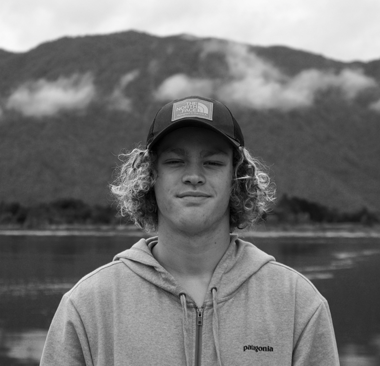
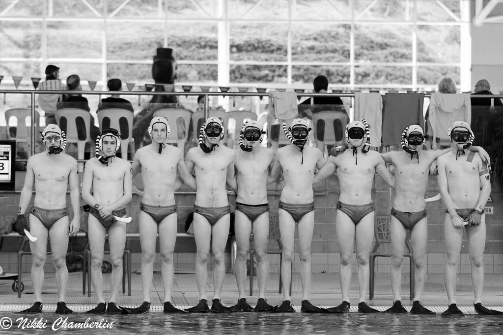
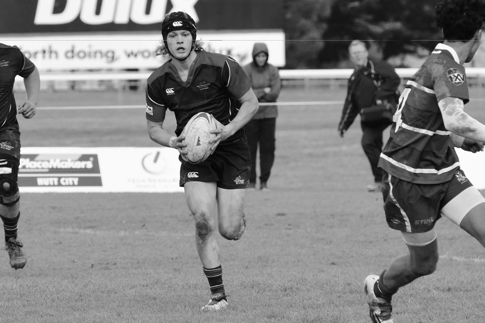
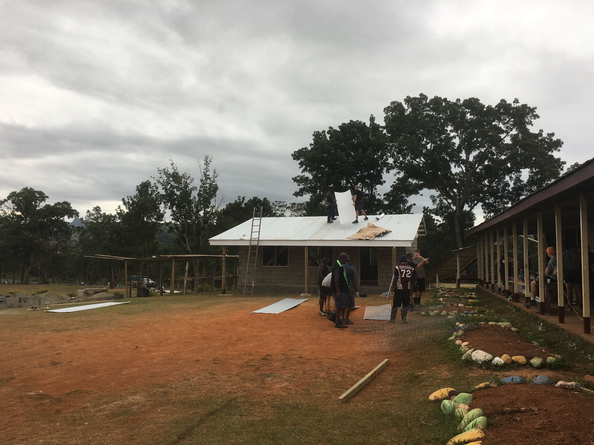
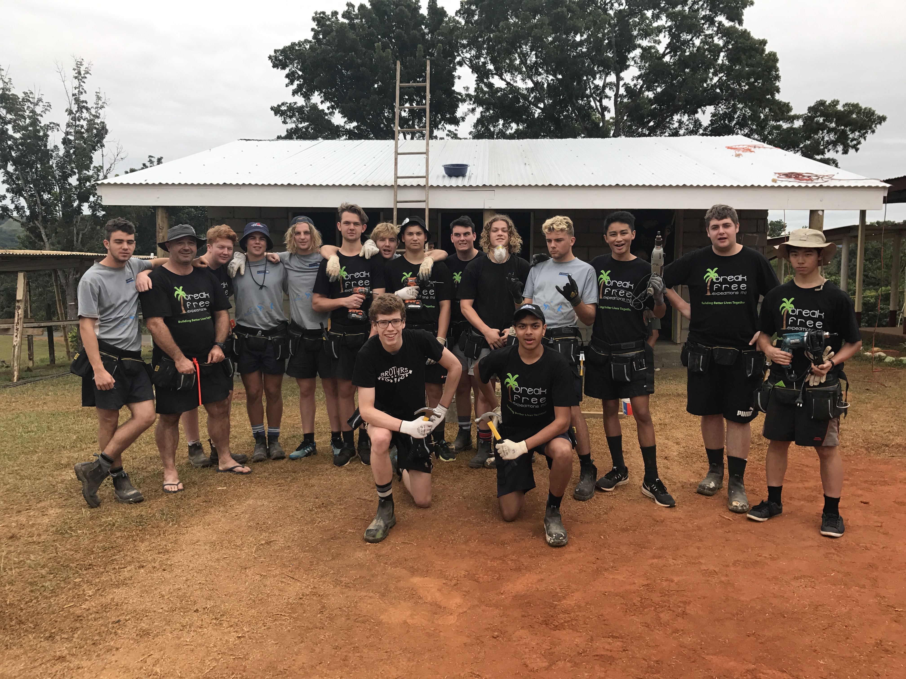

KO AWA "AHAU"
I am Awa
My full name is Awatea Tamati Randall. I am currently studying a Bachelor of design with honours at Wellington's Massey University, and this website will be the main platform of which my aspirations and work will be displayed. This being for the marking of my assessments, and the thought process that goes into producing the work I produce. My creative curricular interests include graphic design and photography. Over the years I have studied these subjects at college, achieving highly, also touching on visual art painting in the year 2015, my very first creative course. Ever since my visual art course in 2015 I have found a great interest and skill in the field of creative arts and wish to continue, thus here I am studying a Bachelor of design.
SPORT INFLUENCE


Besides the creative aspect of my life, my co-curricular interest include sport. In the year 2016 I was fortunate enough to represent New Zealand at the oceania underwater hockey tournament, held in Hobart, Tasmania. This achievement was an effort built by many years or training and preperation, and fortunately I was granted a position in the team. Throughout my schooling years I also played rugby for teams such as the Second XV and the First XV.
SERVICE INFLUENCE

